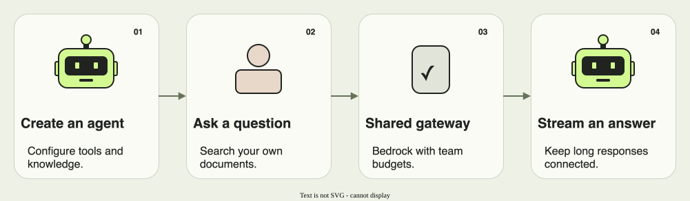
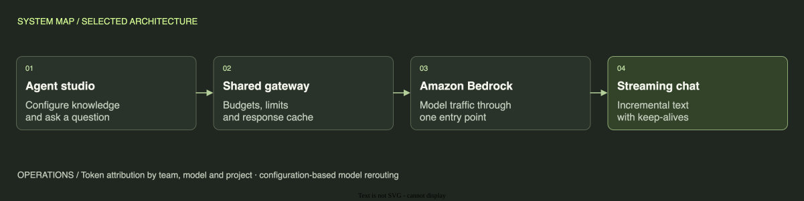

Signet Jewelers / AI Foundry
A shared platform for useful agents.
An internal agent studio backed by a governed Bedrock gateway and streaming chat.

Engineering / Architecture & tradeoffs
A governed model gateway with a resilient chat interface.



- Request path
- Internal agents send model traffic through a shared Amazon Bedrock gateway. Budgets and rate limits apply per team; response caching reduces repeated work.
- Streaming transport
- Chat streams incremental text. Keep-alive heartbeats protect long responses from CDN idle timeouts without treating those heartbeats as answer content.
- Operations
- Token metrics are attributed by team, model, and project. Model rerouting and shutoff are configuration changes, so operators can respond without a code deployment.
ELI8 / How it works
One front door for many agents.
The studio gives people a place to build document-search agents. A shared gateway manages model traffic, and the chat interface shows long answers as a stream.
- Configure
- Teams build agents around their own documents.
- Govern
- The gateway applies team budgets, rate limits, and response caching.
- Keep connected
- A small keep-alive signal tells the connection to stay open while the answer is being prepared.
ELI5 / The simple version
A helper that can read your team’s books.
People ask questions about their own documents. The helper starts showing its answer while it is still working, so they can follow along.
- Give it knowledge
- Connect the documents the team needs.
- Ask and follow along
- Read the answer as it arrives.
- Set the rules
- The team controls access to model traffic and spending.